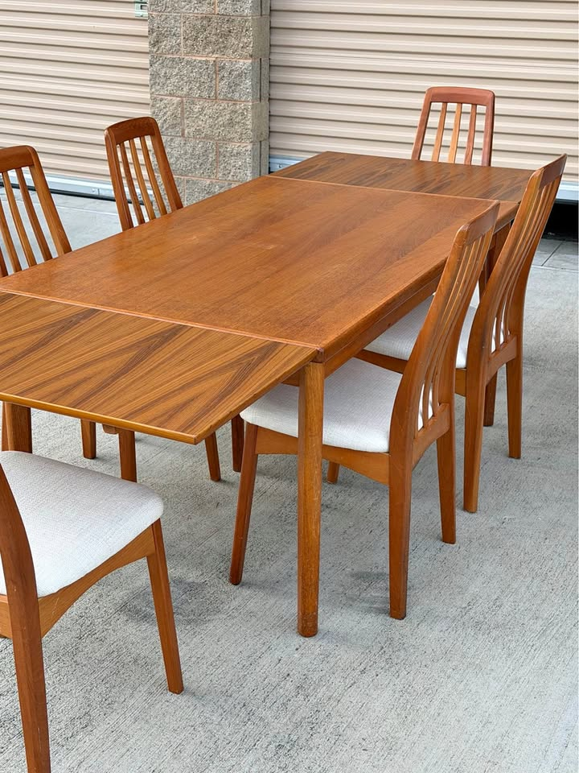
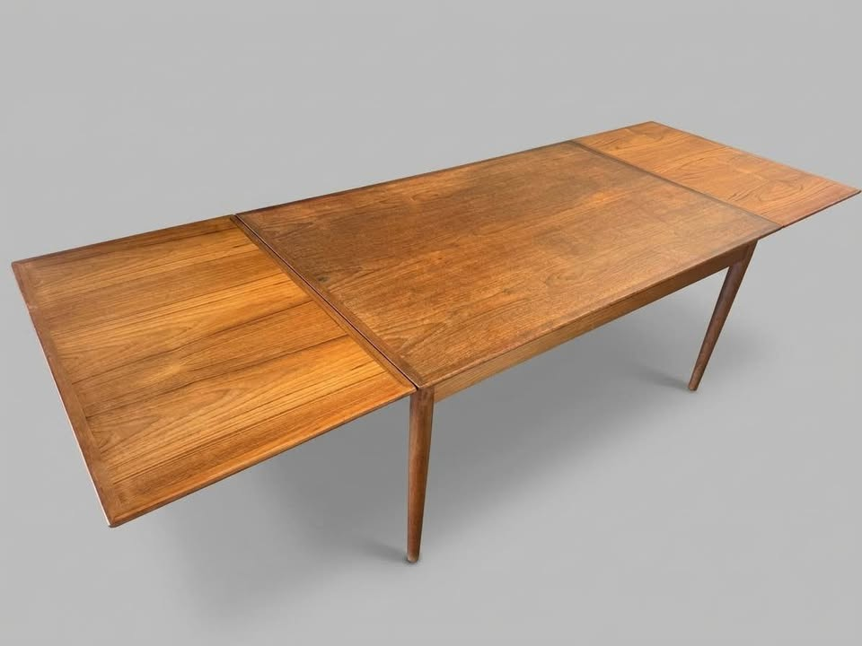
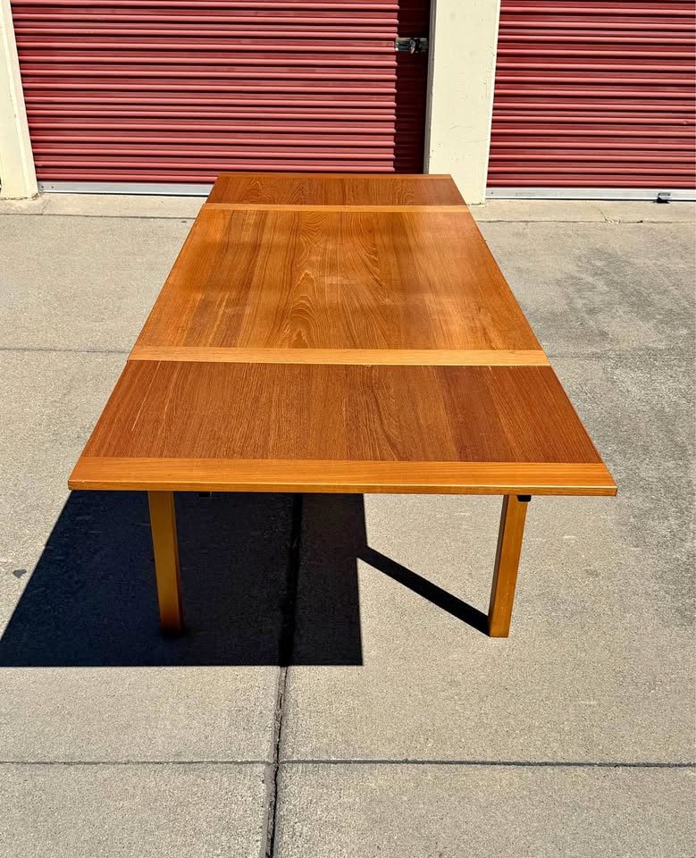

461 Anderson — Dining Table Watch
Mid-century modern · extendable to seat 8 · Danish teak/walnut preferred · leaves must blend with the top, and scratches only count if they can confidently be repaired · driveable from the Bay Area
Updated September 8, 2026Current, click-verified, in-budget picks only · ★ value = price vs. quality · ranked first on the surface verdict — leaf colour and scratches judged together, since one refinish fixes both
⚡ Look at right away
- ⚠ Correction to yesterday, and it demotes the #2 pick. This card said the Hayward $800 needed a ~$100–200 oil refresh. Wrong. Re-reading the seller's sunlit photos — direct sun acts as raking light — the top shows a dense field of fine scratches and an overall milky haze. That haze is worn lacquer, not dry oil, and oil cannot penetrate lacquer. The real fix is a scuff-and-recoat, ~$150–300, and the visible edge banding and ply line confirm a veneered top, so a full strip-and-refinish is off the table. It falls from #2 to #5.
- 🔍 And on "why wouldn't a dealer just oil it?" — he isn't one. Ibo Maqsoodi joined Facebook in 2026, has 8 ratings, and his nine active listings are a 1972 pickle-jar lunchbox, a striped romper, glassware, a lamp and some furniture. That is a general estate-and-thrift reseller, not an MCM restorer. He hasn't refinished it because he doesn't refinish anything — which is reassuring about his honesty and unhelpful about the table. He disclosed the scratches; he just undercounted them.
- 🌟 The promotion goes to Los Altos $850, now #3 — and for exactly the reason that matters here. It is solid teak, so a full sand-and-refinish is safe and fixes the pale leaves and the patina in one pass for $300–600. It is the only table on this board where the repair is genuinely low-risk rather than a judgement call.
- 🏆 #1 is unchanged: Palo Alto $580 — the only listing that rules out scratches in writing, leaves that blend, six chairs, nothing to do. Expires Sep 12. The Hayward six-chair set at $1,850 holds #2 with the cleanest top on the page.
- 📝 Before driving anywhere, ask for one photo: the top shot in low, raking sunlight. Every mistake this board has made — the San Rafael $600's worn veneer, the Hayward $800's scratch field — was invisible in the listing's flattering shot and obvious in the sunlit one.
Budget up to $2,000 (table alone) · extends to ≥84" · Danish teak/walnut/rosewood · four legs (no pedestal/trestle) · leaves must blend in colour with the main top — a refinish is acceptable but is called out and costed on every card
Tables · ready as-is

Vintage MCM Teak Dining Set — Table + 6 Chairs
A full solid-teak set — table plus six matching teak chairs — for $580, on four clean tapered legs, in excellent condition. Since the budget is for the table alone, six chairs (worth ~$600–1,200) come essentially free. The only thing held against it is reach: 87" is the shortest extension on the board, and at 33" deep eight seats would be snug. It expires Sep 12 — four days.
✔ Surface: the cleanest on the board — nothing to do. The only listing here that rules out scratches in writing: "no damage, deep scratches, or water rings on the tabletop surface," in a "pristine" finish the owners call clean, smooth and well-maintained. The extended photo backs it — even tone across the seam, no clouding, no rings. Leaves blend (the near leaf reads a shade warmer, within lighting variation). This is the one pick that needs neither a refinish nor a follow-up photo.

Midcentury Danish Teak Draw-Leaf Table + 6 Chairs
The longest Danish complete room on the board: 96" extended on four tapered legs, with six matching Benny Linden slat-back chairs in clean, stain-free cream fabric — no recovering project, unlike the Skovby set. It dropped $145 this week, which puts the table alone at $650–$1,250 once the chairs are netted out. What holds it to four stars is the "+ Tax" and the missing maker's stamp.
✔ Surface: clean and even; leaves blend. Zoomed in, this is the glossiest, most even top of any pick — figured grain, no clouding, no visible scratch field, only the faintest marks mid-panel. Both leaves are out in the photo and carry the tone across; the near leaf is fractionally lighter with different grain, which reads as figure rather than mismatch. Nothing to refinish. The reservations here are money and provenance, not surface.
Tables · repair you can be confident in

Danish Control Mid-Century Modern Teak Extendable Dining Table
Still the best single table this search has surfaced on paper. 106" extended — the longest confirmed length on the board — on four round tapered teak legs, with a genuine "Furnituremakers Danish Control" medallion photographed on the underside, for $850. Everything about it is right except the one thing that now decides the ranking.
⚠ Surface: pale leaves + patina on the middle board — one refinish, ~$300–600. Two issues, one fix. The leaves are plainly lighter than the darkened top (visible in the photo above), and the seller notes patina on the middle board. Because this is solid teak, a full refinish — sanding top and leaves together, then re-oiling — addresses both at once and can be done without fear of burning through a veneer. That is the difference between this card and the two at the bottom of the page. On size, provenance and base it is still the best table the search has found.

Ansager Møbler Danish Teak Extendable Dining Table
A labelled and stamped Ansager Møbler — the priority Danish maker — for $800, photographed fully extended on four square tapered legs. The seller notes these fetch $4,000 restored. Still the cheapest stamped-Danish table on the board. It would be a flat 5/5 if the listing said how long it actually gets.
⚠ Surface: pale leaves + "typical surface wear" — one refinish, ~$300–600. The driveway photo shows it fully open with the right-hand leaf clearly paler than the centre, and the seller concedes typical surface wear, pricing against the $4,000 restored figure. Solid teak, so the fix is safe and the $800 price absorbs it. The unresolved problem here is not the finish, it is that the seller still will not state the extended length. Ask for that before anything else.

Vintage Danish Extendable Dining Table
Everything the board has been asking for in one listing: Made in Denmark, 92" extended with the maths spelled out, four square legs, good condition, table only at $800 — and it is the only pick photographed fully open where the leaves and the main top are genuinely the same colour. Nothing to refinish, nothing to infer, nothing to ask for. Posted sixteen hours ago.
⚠ Surface: correction — this is not an oil-refresh job. Yesterday this card said a ~$100–200 oiling would lift the scratches. That was wrong, and the sunlit photos are why. Shot in direct sun — effectively raking light — the top shows a dense field of fine white scratch lines across both the leaf and the centre panel, far more than the seller's "a few," and the whole surface carries a milky haze. That haze is the signature of a worn original lacquer, not a dry oil finish, and oil will not penetrate lacquer — it would sit on top and change nothing. The honest fix is a scuff-and-recoat (abrade the existing finish, recoat with a wiping varnish; ~$150–300, or a careful weekend), which is veneer-safe because it never reaches bare wood — but it may not remove the deepest lines, and a full strip-and-refinish is not advisable here: the edge banding and ply line visible along the rim confirm a veneered top. Leaf colour also softens in the sun: in the hero shot the leaves match, in the raking light both read lighter than the centre. Still a Made-in-Denmark table at 92" for $800 — but it is a project, not a wipe-down.
Tables · can't judge yet — get a photo

Mid Century Draw-Leaf Dining Table — Danish Teak
The cheapest table-only pick on the board, and it clears the length gate: 87" extended, solid Danish teak, matching leaves that nestle under the top, four tapered dowel legs. Two things hold it at four stars — it is honestly described as "fair", and at 32¼" deep it is the narrowest top here.
❓ Surface: leaves blend; the scratches are graded but never shown. The extended photo shows both leaves matching the top well. But the listing grades it "Used – Fair — some scratches and scuff marks," and the only photo is shot from across the room at an angle that would hide every one of them. "Fair" is the weakest grade on this page. Ask @walnutcreekmodern for close, raking-light photos of the top before driving — at $550 there is budget for a refinish, but not for a surprise.

Skovby Walnut Extendable Dining Table + 6 Chairs
A Skovby — a priority Danish maker — reaching 102½" on four clean square tapered legs, plus six chairs, for $1,600. Subtract the chairs at $100–200 each and the table lands around $700–$1,000. Still the only named Danish workshop on the board that also solves the chairs.
❓ Surface: unknown, and there is a veneer flag. Every photo shows the table closed, so the leaf colour is untested — and on a pull-out of this design the sections live under the top and are the likeliest here to have stayed pale. The condition note is a soft "wear consistent with age and use" with no detail. Compounding it, the listing says "walnut-toned wood" rather than solid walnut, which usually means veneer — and veneer is what makes scratches unrepairable. Ask PlaceMakers for one photo fully extended and one close-up of the top. Those two images move this to the top of the board or the bottom of it.

Vintage Danish Teak MCM Expandable Dining Table
Honest Danish teak at 94" extended — but you're buying largely on trust. Six weeks on and there is still no photograph of it assembled, no maker mark, and the listing quotes two different prices.
❓ Surface: promising, but untested. The leaf and the main top are laid side by side on the lawn and read as the same honey teak, which is encouraging, and the seller calls it excellent vintage condition. But there is no assembled photo and no close-up, so neither the seam nor the scratch level can be graded from here. Six weeks on, that is a choice the seller keeps making. Ask for it set up, in daylight.
Tables · repair not confident

Danish Modern Teak Draw-Leaf by Ansager Møbler
A confirmed Ansager Møbler, freshly refinished to like-new, 93" with its dimensions actually stated — the one thing the San Rafael Ansager still can't give you. It remains the only turn-key priority-maker table on the board, and the "expires Friday" clock is gone: the seller renewed it on Sep 5 and it now runs to Oct 5.
⚠ Surface: the top is the best here — the leaves are the problem, and a refinish already failed to fix them. On scratches this is the strongest card on the page: completely refinished, hand-rubbed oil, graded like-new, nothing to do. But it is also the board's cautionary tale on colour. The table was refinished in full and the seller still writes that the leaves have "a slightly different hue from being stored away." If a professional refinish did not equalise them, a second one probably will not either — treat the mismatch as permanent rather than as a $300–600 fix. Worth seeing in person precisely because it is the one case where the photos cannot settle it.

Vintage Danish Modern Teak Extension Table
Yesterday's #1, and still the best pure bargain here: a stamped Made in Denmark teak extension table opening to 93", holding at $600 into a sixteenth week. It gives up the top spot only because the new Hayward is the same table an inch shorter with a cleaner top, a dated posting and a dealer who delivers. On dollars-per-inch, nothing beats this.
✘ Surface: repair not confident — a worn veneer top. This led the board yesterday on leaf colour. Zooming in reverses the verdict. The main centre panel is blotchy, cloudy and dull, with pale patches and a failing finish, while the pulled-out leaf beside it is clean and crisp — so the "match" is really the top having faded down to the leaf, not the two ageing together. And the listing describes the table as "solid teak and teak veneer": that centre field is a veneered panel inside solid banding, and sanding an already-worn veneer risks burning through it. That is the line between a $400 refinish and a ruined tabletop. Not confidently repairable — see it in person or pass.
How they compare in one line each — surface first:
Palo Alto $580 — nothing to do: no scratches in writing, leaves blend, six chairs. Expires Sep 12.
Hayward set $1,850 — cleanest top on the board, 96", six chairs; price just dropped $145.
Los Altos $850 — 106", best provenance, and solid teak: the one confident $300–600 fix.
San Rafael Ansager $800 — solid teak, same safe fix — but the length is still unstated.
Hayward $800 — 92" and Danish, but veneered and hazy: scuff-and-recoat, and it may not take it all out.
Walnut Creek $550 — leaves blend, but "fair" scratches are graded and never photographed.
Redwood City Skovby $1,600 — 102½" and six chairs, but shown only closed, and "walnut-toned" hints veneer.
Emeryville $950 — leaf tone looks right, but it has never been photographed assembled.
SF Ansager $950 — flawless refinished top; the leaf mismatch survived that refinish, so treat it as permanent.
San Rafael $600 — worn veneer. Not confidently repairable.
The lesson of this run: judge the repair, not the flaw. Two tables on this page have almost identical descriptions — surface scratches, good condition, Danish, under $900 — and they belong in different tiers, because Los Altos is solid teak and the Hayward $800 is veneer. Solid wood can be sanded flat and re-oiled as many times as it needs; a veneered top gets one careful scuff-and-recoat and no second chances. The listing text will almost never tell you which you are looking at. Two things will: the edge of the top — a veneered panel shows a banding strip and often a ply line along the rim — and a photo taken in low, raking sunlight, which turns an invisible haze into an obvious one.
The practical read is unchanged at the top and clearer below it: Palo Alto $580 needs nothing and expires Friday week. Los Altos $850 is the best table you can confidently fix. The Hayward $800 is still a Made-in-Denmark 92" table for $886 out the door — just buy it as a project, at a project price.
Checked this run: all ten tables and both chair listings live. The Hayward $800 seller profile was inspected directly (9 active listings, joined 2026, mixed household resale — not a restorer). Prices unchanged since this morning apart from the already-noted Hayward set $1,995 → $1,850. No new qualifying listings.
Ruled out (standing): San Jose "Monaco Walnut" $400 + 6 chairs — removed from the board this run: the seller states one leaf is water-damaged and one "appears added to the set (the darkest in the photos)," so at least one leaf is not matching wood; it is also an American walnut line, not Danish. BRDR Furbo game table ($800, SF) — priority maker, four legs, self-storing leaves, but 59" fully extended. Richmond teak-and-oak (now $915, cut from $1,075) — fully refinished, so the leaves would blend, but after two weeks the seller still states no dimensions at all. Stanley "Walnut" + 6 chairs (now $750, cut from $850, SF) — American maker, drop-leaf, no dimensions. Dyrlund teak ($1,700, Hayward) — ceramic-tile inlay and a trestle base. Meredew butterfly-leaf teak ($1,450, SF), "Teak Dining Table One Butterfly Leaf" ($1,280, SF), McIntosh oval ($1,450, SF), SF butterfly-leaf teak ($1,680) — all U.K. imports. Gangø teak ($850, SF) — ~63". E. Valentinsen rosewood ($1,175, Walnut Creek) and Gudme Møbelfabrik rosewood ($700, SF) — twin-pedestal. Gudme Møbelfabrik ($550, Santa Rosa) — round on a pedestal. SF "Danish mid century modern extendable" ($700 and $725) — pedestal, stated in the title. SF "Modern danish teak oval" ($500) — dual-pedestal trestle. Vejle Stole Møbelfabrik ($1,995, SF) — priority maker but only 76" extended. Sonoma Skovby ($800) — twin cylindrical pedestal, peeling veneer. John Keal walnut ($975, Santa Rosa) — round on a slatted pedestal. Ansager Møbler square draw-leaf ($650, Walnut Creek) — only 67". SF "Teak Dining Table with Pull Out Leaves" ($1,695) — 83", one inch short. Roseville teak ($1,500) — no maker, no dimensions, ~2 hours out. Millbrae ($799) — 100" but arched trestle base. Los Gatos ($1,000) — 78". El Cerrito ($1,150) — two separate gate-leg tables. Fremont 1970s draw-leaf ($450) — made in Singapore. Novato built-in-leaf ($1,750) — trestle. Albany draw-leaf ($1,000) — 67". Alameda ($1,250) — 72" max, laminated top. Modesto teak ($520) and Sacramento MCM teak ($680) — no dimensions / trestle, outside the drive radius. Benny Linden table ($1,290, Sacramento) — outside the radius. Stockton chevron-top sets ($1,250 and $1,255) — parquet tops, not Danish. Castlery "Seb" ($900, San Jose), West Elm ($200) and Crate & Barrel "Tate" ($1,000, Portola Valley) — current-production retail. Oakland oval ($1,750), Refinished Skovby ($2,950), San Jose "large conference" teak ($2,999), Sonora sunburst ($2,000, round), Børge Mogensen drop-leaf ($3,200), Stickley walnut ($3,500), Martinez ($180, too small), and SF tables at $2,200, $2,450, $2,500 and $2,800 — over or under spec. Heywood-Wakefield ($895) — American. Nathan, Remploy, G-Plan and other UK imports.
Gone in the last month (for reference): the Petaluma $1,200 Made-in-Denmark draw-leaf (90.5", four tapered legs, photographed extended) — unavailable after three days. The SF Ansager XL $1,700 (112" × 48", the largest table this search ever found) — deleted by its author. The Oakland Skovby $1,200 (110" cherry oval) — out of stock. The lesson stands, and the new Hayward listing is the reason to act on it: anything Danish, dimensioned and under $1,300 clears in under a week.
Watchlist: the Gudme Møbelfabrik walnut expandable, $2,050 (Folsom — priority maker, 63¼" → 101½", original table pads, delivery included, $50 over the ceiling) sits outside the 40-mile Marketplace radius and the SF Bay Craigslist region, so it still cannot be re-verified from here. Its listing ran to roughly Sep 11, so it may already be gone — and with two Made-in-Denmark tables now on the board under $850, it has stopped mattering.
⚡ Chairs — quick read
- 🌟 Sausalito's seven teak chairs at $250 are still the only set of 6+ on the board — re-verified live and unchanged at ~$36 a chair, now about two weeks up. Benny Linden, Danish-modern spindle backs, cushioned seats, used–good. Go look.
- 🏆 The new #1 table is table-only — which makes Sausalito the matching move. The Hayward $800 comes with nothing; seven Benny Linden chairs at $250 finishes the room for about $1,140 all in. And the Hayward $1,850 set's six chairs are the same Benny Linden line, so a matching eighth may be findable from that same dealer.
- 😕 Nothing new in chairs this run. No standalone set of six or more appeared on either Craigslist or Marketplace.
- ⚠ The four Danish teak chairs in SF, $600, are still live. Solid old-growth teak, cleaned, oiled and newly reupholstered in green wool, like-new — same Mission-District seller as the SF Ansager table, so it's a one-stop pickup. But it is four chairs at $150 each, so it's a component, not a room.
- 💭 Still no standalone set of eight. Ten runs since the D-Scan eight sold. Seven-plus-one remains the realistic route — or simply run seven around a 92"–96" table.
Budget $1,200–$2,400 for six · MCM teak/walnut that coordinates with the table · easy, clean fabric · driveable / delivers
Chairs · sets of 6+ · in budget

7 Benny Linden Teak Dining Chairs — Set of 7
Seven teak chairs for $250 — ~$36 a chair — with tall sculptural spindle backs, tapered legs and plain cushioned seats. The cheapest seating this search has found by a factor of three, the only set above six, and still the only standalone set on the board. The single reason it isn't 5/5 is that Benny Linden is Danish-modern style, not a Danish workshop.
Chairs · partial sets worth a look

Four Danish Modern Teak Dining Chairs
Solid old-growth teak, cleaned, oiled and newly reupholstered in green wool — like-new, nothing to do. Four stars' worth of quality at a three-star count: $150 a chair for four is four times Sausalito's price per seat, and four chairs do not furnish a table that seats eight.
The trade-off in one line: Sausalito, $250 remains the only standalone set on the board and buys seven teak chairs for less than the cost of recovering any six — the obvious first call, with the caveat that they are Danish in style only. Everything else means buying a table that comes with chairs: the Palo Alto $580 (six, excellent), the Hayward $1,850 (six, clean Benny Linden), or the Redwood City Skovby (six, stained).
Seen but set aside: Mid-1960s D-Scan teak, 3 chairs ($300, Novato) — only three, fair condition, needs refinishing and reupholstery, Singapore-made. Set of 4 Vintage Danish Teak Windsor-style ($275, cut from $1,100, ships to you) — four only, and Windsor spindle-back rather than Danish-modern. Set of 6 Danish-style teak by Sun Furniture ($750, Berkeley) — sold. Six Danish Modern teak, reupholstered purple ($1,000, SF) — deleted. Four Henning Kjærnulf for Vejle Stole Møbelfabrik, 1960s ($900, Richmond) — a priority Danish maker, but only four chairs at $225 each. Set of 8 D-Scan teak ($1,000, Richmond) — sold. Four D-Scan teak chairs ($600, Santa Rosa) — gone. Set of 8 Danish teak, free delivery ($1,600, San Rafael) — sold. Set of 6 D-Scan teak ($1,200, Novato) — pricier per chair. Six H.W. Klein for Bramin, refinished ($2,795, Richmond), Johannes Andersen teak 6 ($2,650) and six vintage MCM Danish teak ($1,700, SF) — over the ceiling or over $250 a chair. Nathan teak 6 ($1,280, SF) — UK import. Sunnyvale MCM arm chairs ($400) — grey tweed, not teak-toned. A floral-upholstered 6 ($2,400) — busy fabric.